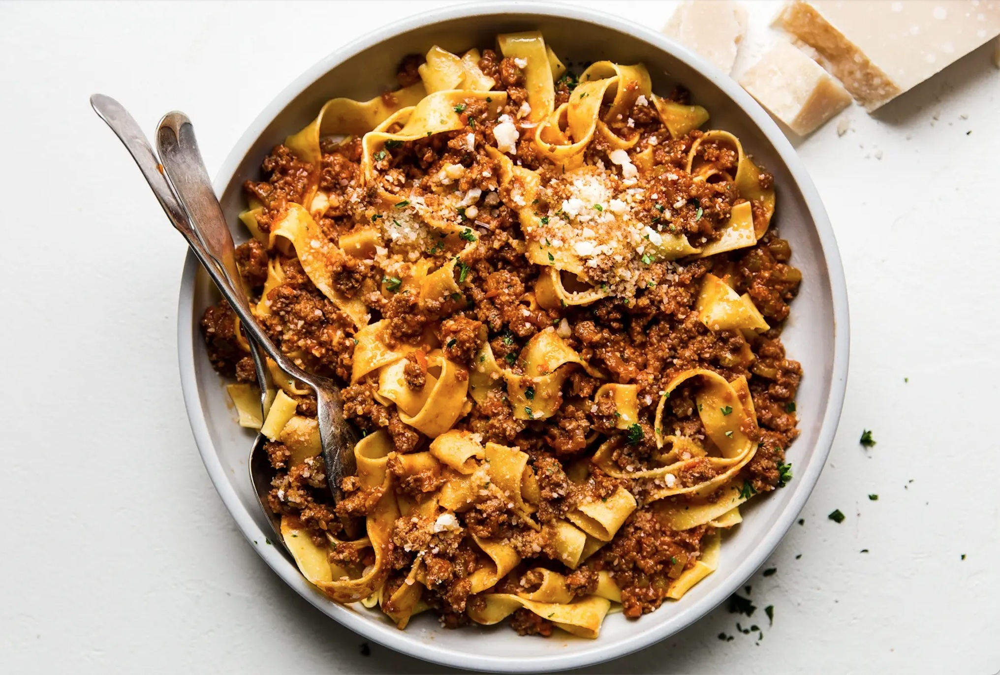

Marcella Hazan's Bolognese Sauce

Description
Marcella Hazan brings us this incredible dish in her classic cookbook 'Essentials of Classic Italian Cooking'.
This bolognese sauce, or ragu, comes from the northern regional of Italy. With ground beef chuck, carrot, celery,
onion, nutmeg and Italian plum tomatoes, this dish is perfect for those cold winter nights. The trick to achieving
the soft, rich flavours that characterize this dish is to allow the sauce to gently simmer on the stove
over the course of several hours. In the meantime, kick back, grab a glass of red wine and enjoy the evening!
Ingredients
- 1 tablespoon olive oil
- 3 tablespoons butter plus 1 tablespoon for tossing the pasta
- 1/2 cup chopped onion
- 1/2 cup chopped celery
- 1/2 cup chopped carrot
- 3/4 pound ground beef chuck, not too lean (or 1/2 pound ground beef chuck plus 1/4 pound ground pork,
preferably from the neck or Boston butt)
- Kosher salt
- Black pepper, ground fresh from the mill
- 1 cup whole milk
- Whole nutmeg
- 1 cup dry white wine
- 1 1/2 cups canned imported Italian plum tomatoes, cut up with their juice
- 1 1/4 to 1 1/2 pounds pasta
- Freshly grated Parmigiano-Reggiano cheese
Steps
- Put the oil, butter, and chopped onion in the pot, and turn the heat on to medium.
- Cook and stir the onion until it has become translucent, then add the chopped celery and carrot. Cook
for about 2 minutes, stirring the vegetables to coat them well.
- Add the ground beef, a large pinch of salt, and a few grindings of pepper. Crumble the meat with a
fork, stir well, and cook until the beef has lost its raw, red color.
- Add the milk and let it simmer gently, stirring frequently, until it has bubbled away completely. Add
a tiny grating (about 1/8 teaspoon) of nutmeg, and stir.
- Add the wine, let it simmer until it has evaporated, then add the tomatoes and stir thoroughly to coat
all ingredients well. When the tomatoes begin to bubble, turn the heat down so that the sauce cooks at
the laziest of simmers, with just an intermittent bubble breaking through to the surface. Cook, uncovered
for 3 hours or more, stirring from time to time. While the sauce is cooking, you are likely to find that
it begins to dry out and the fat separates from the meat. To keep it from sticking, continue the cooking,
adding 1/2 cup of water whenever necessary. At the end, however, no water at all must be left and the fat
must separate from the sauce. Taste and correct for salt.
- Toss with cooked drained pasta, adding the tablespoon of butter, and serve with freshly grated Parmesan
on the side.